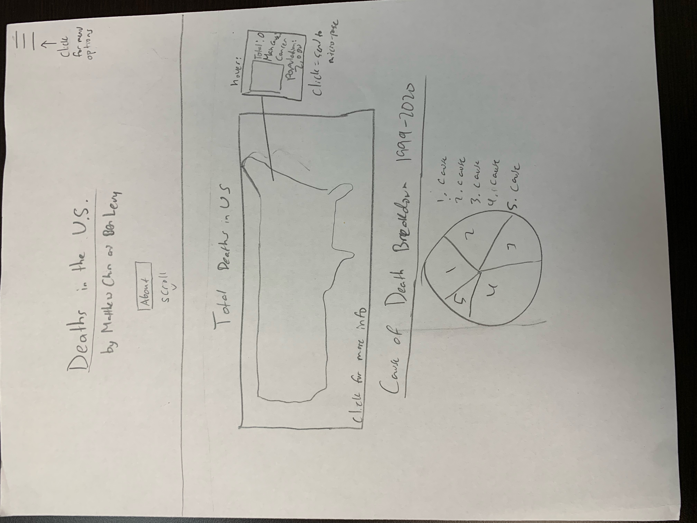
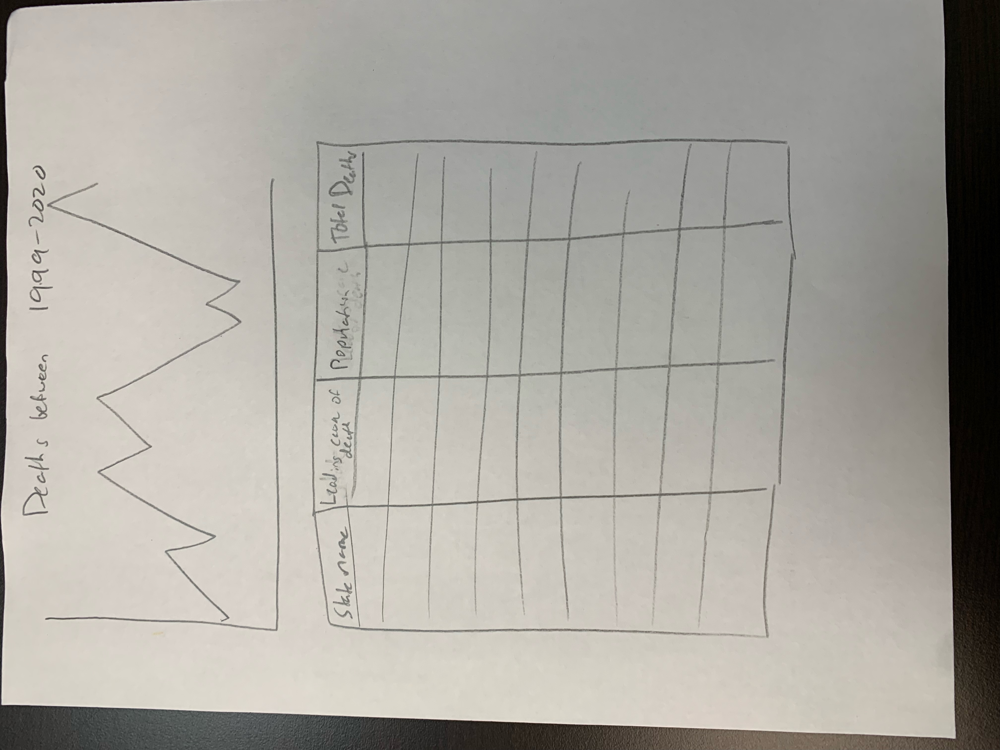
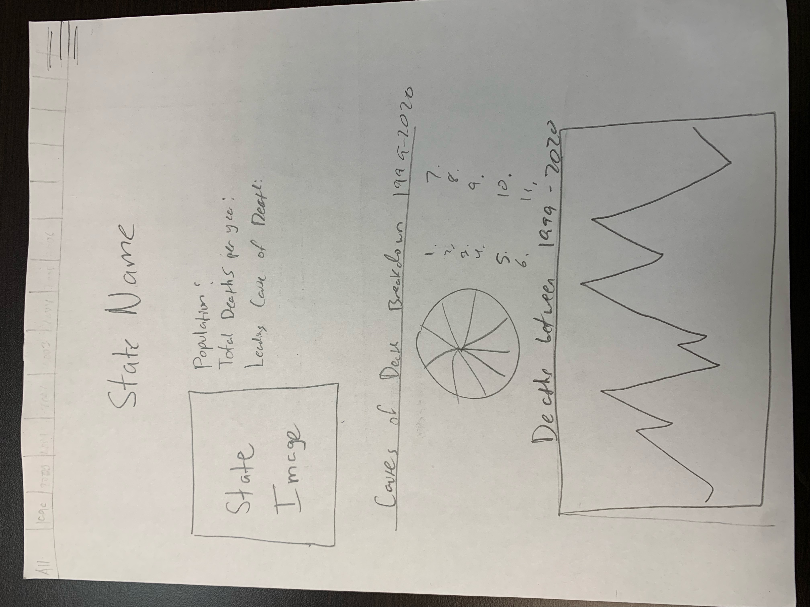
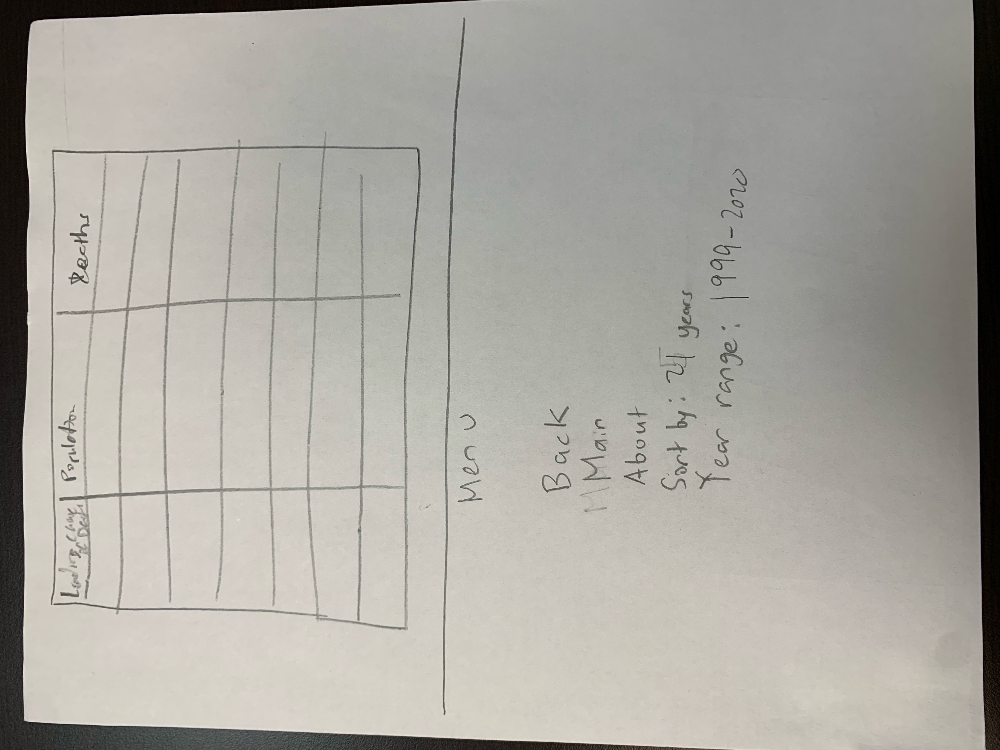

Diagrams
Matthew's Diagrams




Evaluation of Matthew's Diagrams
- Signifier -- hovering over each state shows outline/indicates that micro page exists
- Mapping -- map of US to indicate states
- Comfort -- bad because each graph takes up a lot of space and is on their own line.
- Understandability -- The design is very simplistic with only a few visual graphs and minimal text. This makes it easy for anyone to understand. The order of the graphs goes from the largest idea (map of US) to smaller ideas (individual causes of deaths).
- Achievability -- only a few graphs, all possible with plotly library. Not too much that it would take too long either. The CSS is pretty simple as well.
Ben's Diagrams


Evaluation of Ben's Diagrams
- Signifier — hovering over each state shows top-level data and indicates that a micro view exists
- Mapping — Map of US shows states and provides a familiar indication of where to click
- Discoverability — Buttons/features are not hidden behind a lot of menus, making it very easy to figure out the program's capabilities
- Achievability — Not making very many graphs or performing complicated data analysis will make this managable. Getting data by hovering might make for a challenge
- Understandability — The design isn't overly complicated or technical and it is fairly intuitive, so it should be very easy to extract data and useful information from
Settled Design
We settled on a design similar to Ben's for the macro page. We decided that Ben's diagram was better because it was more simplistic and more effectively communicated the data through its graphs. However, we decided to include the feature, where the user could hover over each state and get some basic information, from Matthew's diagram. For the micro page, we have decided to use Ben's diagram again for similar reasons, but chose to include Matthew's feature that showed the total deaths and populations at the top of the micro page.
Data Information
All 50 states, every year from 1999-2020
Causes of Deaths Measured
- Certain infectious and parasitic diseases: infection/parasite related diseases
- Neoplasms: abnormal tissue growth
- Diseases of the blood and blood-forming organs and certain disorders involving the immune mechanism: immune system/bone marrow
- Endocrine, nutritional and metabolic diseases
- Mental and behavioural disorders
- Diseases of the nervous system: brain/nerves
- Diseases of the eye and adnexa: eye and the part ajoining the organ
- Diseases of the ear and mastoid process: ear and a smooth conical projection of bone located at the base of the mastoid area of the temporal bone
- Diseases of the circulatory system: system involving blood
- Diseases of the respiratory system: breathing system
- Diseases of the digestive system: digestive tract (stomach, small intestine, large intestine, etc.)
- Diseases of the skin and subcutaneous tissue: skin
- Diseases of the musculoskeletal system and connective tissue: bones, cartilage, ligaments, tendons, connective tissues
- Diseases of the genitourinary system: urinary/genital organs
- Pregnancy, childbirth and the puerperium: childbirth related
- Certain conditions originating in the perinatal period: 20-28th week after conception to 1-4th week after childbirth
- Congenital malformations, deformations and chromosomal abnormalities
- Symptoms, signs and abnormal clinical and laboratory findings, not elsewhere classified
- Codes for special purposes: anything not already listed in this list
- External causes of morbidity and mortality: examples: murder
Division of Labor
Matthew's Work
Ben's Work
- Collected Data
- Created generateJSON.js
- Will create entire macro page including macro graph and links to micropages
- Will write javascript for functionality of macro and micro pages